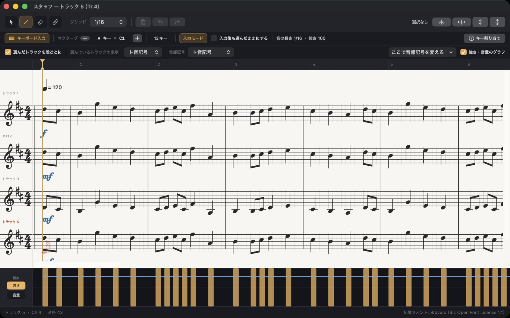
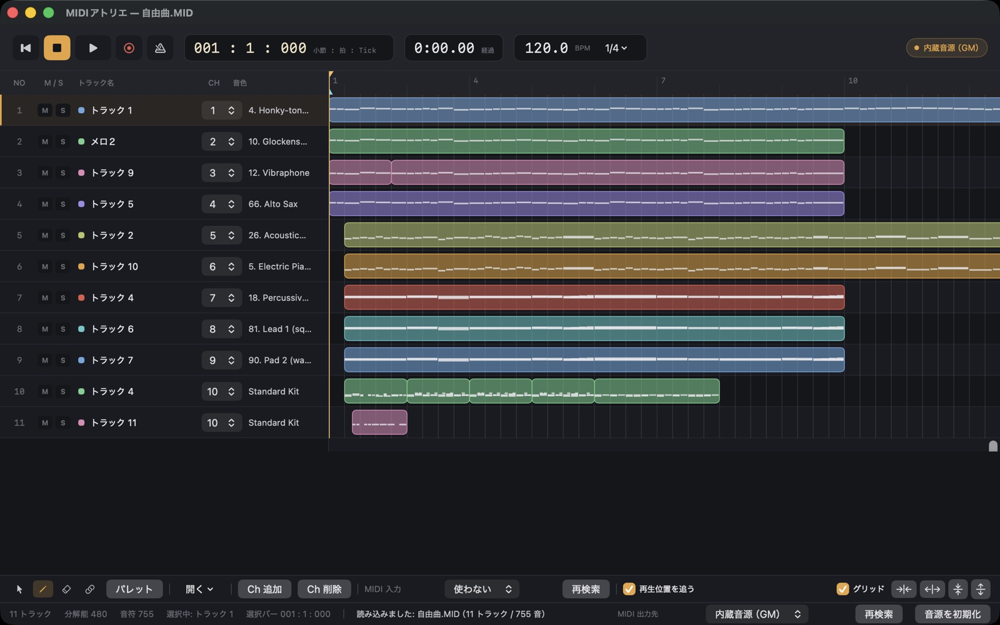
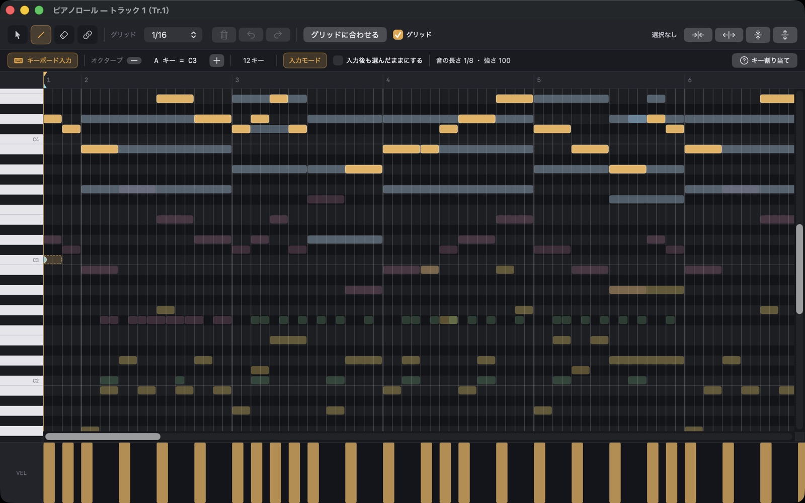
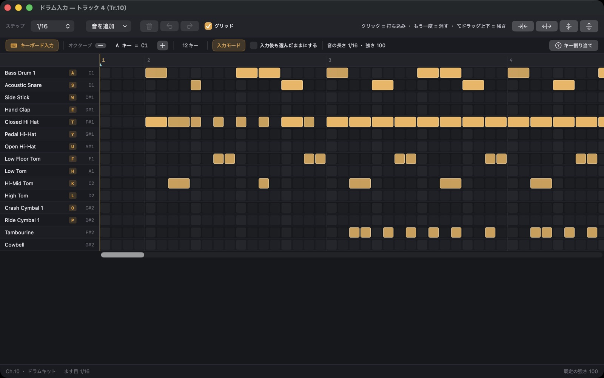
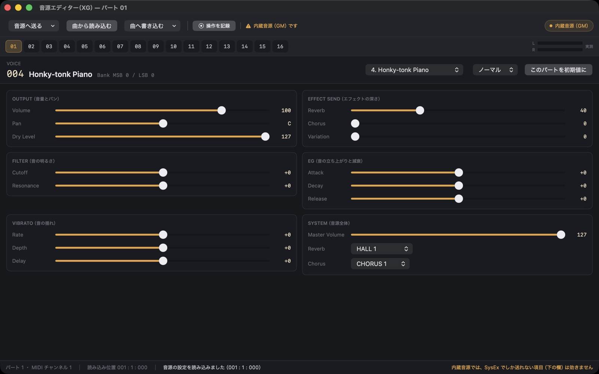

MIDIアトリエ
ミディアトリエ
打ち込んで、清書まで。
パソコンのキーボードだけで曲を打ち込める、Mac 用の MIDI シーケンサーです。鍵盤がなくても、譜面が書けなくても始められます。音の長さを選んで、キーを押して、位置を決める。その繰り返しで曲ができていきます。
- Mac
- macOS 13 以降
- 鍵盤なしで打ち込める
- 通信なし・データの収集なし

2026年11月に、アプリの名前を「MidiAtelier」から「MIDIアトリエ」に変えました。読み方は同じ「ミディアトリエ」で、機能と使い方は変わりません。
3つの画面、同じ操作で
ピアノロール・譜面・ドラムのます目。どの画面も同じキー割り当てで打ち込めるので、覚え直しは要りません。
鍵盤がなくても打ち込める
パソコンのキーボードとマウスだけで音を置けます。MIDI キーボードをつなげば、演奏を録音することもできます。
3つの画面で編集
ピアノロール（⌘2）、ドラムのます目（⌘3）、譜面（⌘4）。同じ曲を、そのときやりたい方法で。
譜面がそのまま清書に
連桁・付点・連符・タイ・2声・臨時記号を自動で組み、強弱記号やスラーも置けます。総譜とパート譜を PDF に。
記号は記号のまま持つ
クレッシェンドやアクセントは記号として保存。記号を動かせば鳴り方もついてきます。ほかのソフトへ渡すときだけ実データに展開。
ノリ（スウィング・シャッフル）
音符の位置を書き換えずに、裏拍だけを後ろへずらして演奏。はね具合は数値で調整でき、やめれば元に戻ります。
音源につなぐ
外部の MIDI 音源へ出力。XG に対応した音源なら、音色・フィルター・リバーブなどを画面のつまみで調整して曲に書き込めます。音源がなくても内蔵の音で鳴ります。
いろいろな形で書き出し
標準MIDIファイル（SMF）、音（WAV / M4A）、譜面（PDF）、楽譜データ（MusicXML）。他のソフトや印刷、共有へ。
打ち込みを助ける道具
グリッドへの吸着、テンポと拍子の変更、メトロノーム、数値で直せるリスト画面、コピー・貼り付け、区間ごとの編集。
画面
横にすべらせると、ほかの画面も見られます。




はじめかた
音源をつながなくても、macOS 内蔵の音源で鳴ります。
打ち込んでみる
- アプリを起動すると、トラック（チャンネル）の一覧が出ます。「Ch 追加」で音を入れる先を作ります。
- 打ち込む画面を開きます。ピアノロールは ⌘2、ドラム入力は ⌘3、譜面は ⌘4 です。
- ペンの道具を選ぶと入力モードになります。パソコンのキーボードで音を置くか、マウスでクリックして置きます。
- スペースキーで再生します（入力モードのときは、アローの道具に切り替えると再生モードになります）。
キー操作の一覧
- 打ち込みの画面にある「キー割り当て」ボタンで確認できます。
- アプリの更新で変わることがあるため、いつも最新の内容を見られるよう、このページには載せていません。
動作環境
- macOS 13（Ventura）以降
- MIDI 音源は任意（無くても内蔵音源で鳴ります）
よくある質問
音が鳴りません
画面下の「MIDI 出力先」を確かめてください。「内蔵音源（GM）」を選ぶと、外部の機材がなくても鳴ります。外部の音源を選んでいるときは、機材の電源・接続・音量も確かめてください。トラックの「M」（ミュート）が点いていないか、ほかのトラックの「S」（ソロ）が点いていないかも確認してください。
鍵盤（MIDI キーボード）は必要ですか
要りません。パソコンのキーボードとマウスだけで打ち込めます。MIDI キーボードをつないだ場合は、演奏を録音することもできます。
作った曲を他のソフトで開けますか
「ファイル」メニューから標準MIDIファイル（.mid）として保存できます。楽譜作成ソフトへ渡すときは MusicXML、印刷や共有には PDF、音として渡すときは WAV / M4A に書き出せます。
譜面はどこまで書けますか
連桁・付点・連符・タイ・2声・臨時記号（ダブルシャープ／ダブルフラットを含む）を自動で組みます。強弱記号、クレッシェンド、スラー、アクセント、弱起、途中の転調や拍子・音部記号の変更にも対応しています。総譜とパート譜を PDF に書き出せます。
外部の MIDI 音源のパラメーターを変えられますか
音源エディター（⌘5）で、音色・音量・パン・フィルター・エンベロープ・リバーブなどを調整できます。XG に対応した音源では、その設定を曲に書き込んで保存できます。macOS 内蔵の音源では、一部のパラメーターは効きません。
保存していない変更はどうなりますか
同じファイルを開き直そうとしたときは、確認してから読み込みます。⌘Z で元に戻せます。
ファイルはどこまで読み書きしますか
「開く」「保存」で選んだファイルと、Finder でダブルクリックして開いたファイルだけです。それ以外の場所には触れません。外部との通信も行いません。